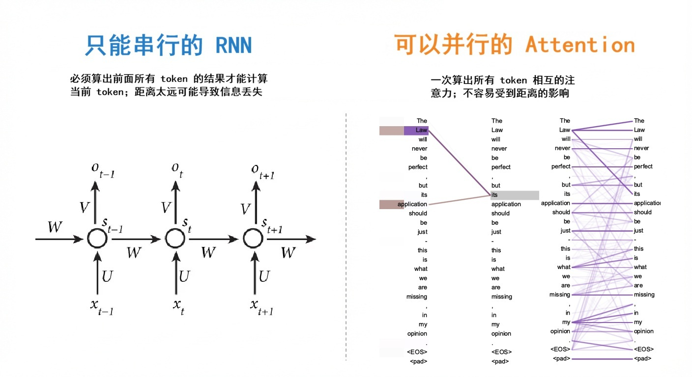
"注意力"可以看做是"全局信息查询"
Query 与 Key 的内积 → 相似度权重
softmax 归一化 → 注意力分布
对 Value 加权求和 → 查询结果
那三个 $\frac{1}{3}$，就是 query 对每个 key 的注意力
核心公式：
$\sqrt{d_k}$：防止数值过大而梯度消失
矩阵形式（$n$ 个 token，行向量）：
$QK^T$ 的第 $(i,j)$ 元素即 $q_i \cdot k_j$，衡量第 $i$ 个 token 对第 $j$ 个 token 的关注程度
softmax → 归一化为注意力权重
$\text{weight} \cdot V$ → 加权取出内容
$Q$、$K$、$V$ 由 Embedding 矩阵线性变换得到：
$E$ 为 Embedding 矩阵，三个 $W$ 为可学习参数；也可来自不同输入，写作 $\text{Attention}(QW^Q, KW^K, VW^V)$
Query：你的搜索关键词
Key：每本书的标签/索引
Value：书的实际内容
为什么不只用一个 Attention？
LLaMA-2-7B: 32 heads, $d_{model}=4096$, $d_{head}=128$
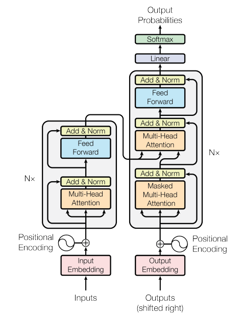
输入侧：inputs 经 Input Embedding 成为词向量序列，再按位置加上 Positional Encoding，作为 Transformer 层的输入。编码器输入输出 Tokens 数量相等。
每个位置只能看到当前及之前的 token（因果性约束）。实现：将注意力分数矩阵与上三角 $-\infty$ 矩阵相加，未来位置分数变为 $-\infty$，Softmax 后权重为零。
类似 ResNet 的 $\text{LayerNorm}(F(x) + x)$，残差连接缓解梯度消失，LayerNorm 对每个 token 的特征维度做归一化。
一个两层全连接网络：$\text{FFN}(x) = \max(0,\, xW_1 + b_1)\,W_2 + b_2$，中间用 ReLU 激活，存储了模型大部分参数。
输出侧：解码器最后一层的输出经 Linear（$d_v \!\to\! |V|$）和带温度的 Softmax，得到 $|V|$ 维概率向量，采样即可输出词表中对应的词。
此为 Attention 原论文架构（用于翻译：原文丢进 $K$、$V$，翻译目标丢进 $Q$）。现代 LLM 均采用 decoder-only 架构，直接用 Masked Attention 学习下一个 token 该生成什么。
核心思想：逐 token 生成，每次根据已有内容预测下一个
[EOS] 或达到长度上限时停止Decoder-only 架构没有编码器，所有信息都通过 Masked Self-Attention 在自身序列上流动。它的训练目标就是"文本接龙"：给定前文，预测下一个 token。自回归生成正是这一训练范式的推理体现——逐 token 生成，每步都在做同一件事：接龙。这也意味着生成 1000 个 token 需要跑 1000 次前向传播。
| 参数 | 含义 | LLaMA-2-7B |
|---|---|---|
| $n_{\text{layers}}$ | 层数 | 32 |
| $n_{\text{heads}} \times d_{\text{head}}$ | 注意力维度 | 4096 |
| $S$ | 序列长度 | 变量 |
| bytes | 精度 (FP16) | 2 |
LLaMA-2-7B, $S=4096$:
$M = 2 \times 32 \times 4096 \times 4096 \times 2$ $= 2\,\mathrm{GB}$
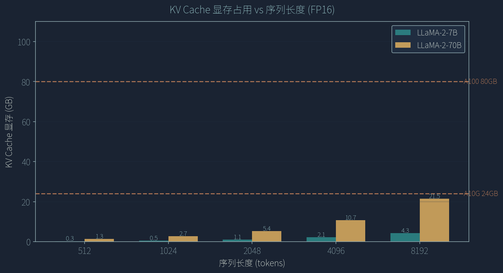
（图表由 Python 生成。模型参数来自 Touvron et al. 2023 / HuggingFace LlamaConfig）
对于长生成（$N$ 大），Decode 阶段 dominates，因为 Decode 是 memory-bound（受限于显存带宽）
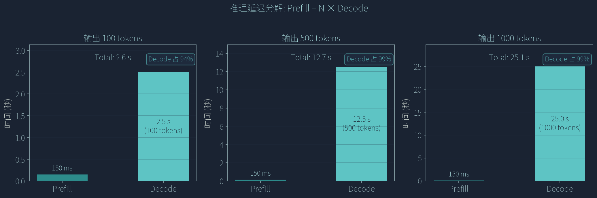
（图表由 Python 生成，延迟值基于 LLaMA-2-7B FP16 在 A100 上的典型推理延迟）
了解了推理流程和瓶颈，接下来看如何加速 → Part 2
LLM 推理的瓶颈在 Decode 阶段的内存带宽，不是算力。加速的关键：减少访存量或提高访存效率。
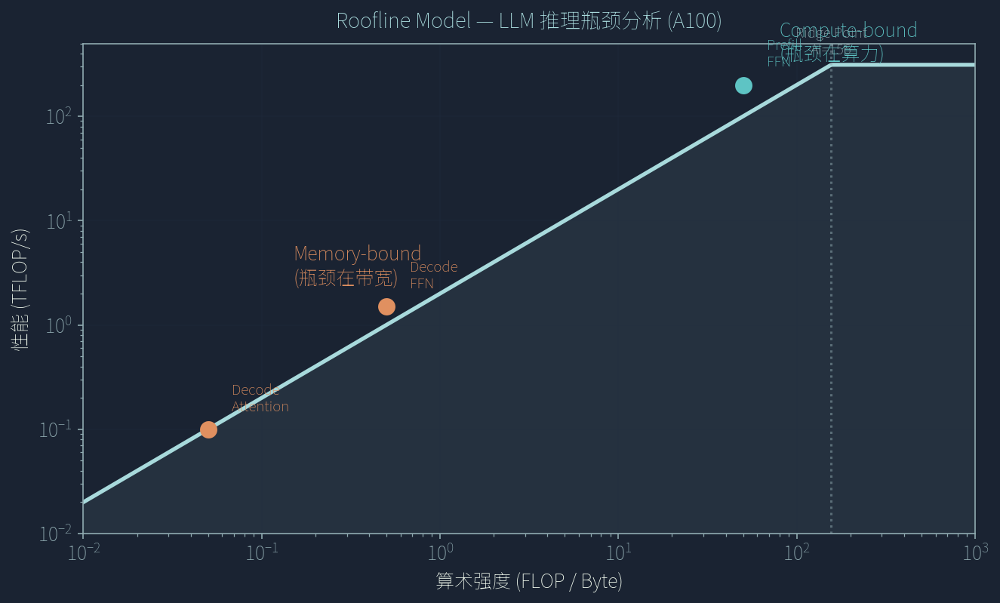
Roofline Model（图表由 Python 生成。硬件参数参考 NVIDIA A100 80GB SXM4 规格：HBM 带宽 2039 GB/s，FP16 Tensor Core 312 TFLOPS）
目标：证明用 Speculative Decoding 采样的 token 分布与直接从大模型 $p$ 采样完全一致。
$p$ = 大模型概率，$q$ = 小模型概率
如果 $p(x) \geq q(x)$：必接受
如果 $p(x) < q(x)$：以 $p(x)/q(x)$ 的概率接受
只从 $p > q$ 的区域重新采样
保证最终分布为 $p$
最终采样分布：
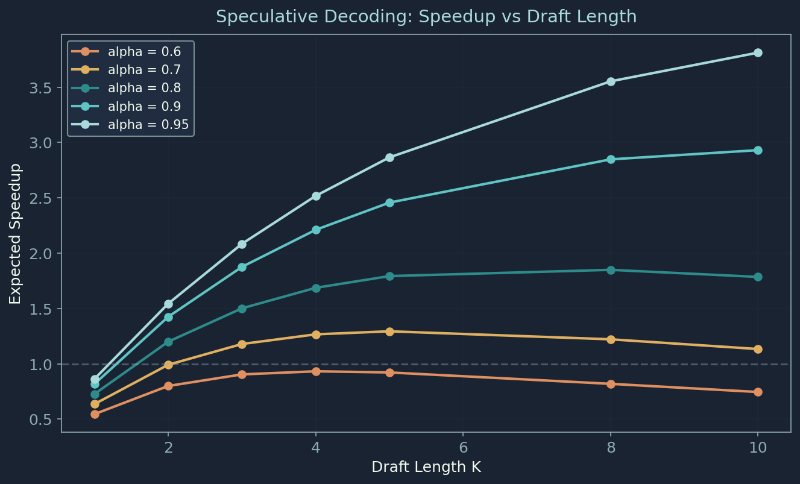
（图表由 Python 生成，基于理论加速比模型，$c{=}0.1$ 为小模型相对大模型的前向传播时间比）
通常 $K \in [4, 7]$，选择与 target 同系列的 small draft model 可获得 $\alpha > 0.9$。
关键约束：不改变输出分布（数学等价性保证）。
用更少位数表示模型权重，牺牲少量精度换取：
| 精度 | 每参数字节 | 7B 模型大小 | 质量损失 |
|---|---|---|---|
| FP16 | 2 B | 14 GB | — |
| INT8 | 1 B | 7 GB | 极小 |
| INT4 | 0.5 B | 3.5 GB | 小 |
问题：直接四舍五入会累积误差。GPTQ 的思路：
Simple RTN: round-to-nearest，忽略层间关系
GPTQ: 考虑权重间的相关性，量化后层输出更接近原始
AWQ (Activation-aware): 基于激活值重要性保护关键权重通道
GGUF: 支持 CPU 推理的量化格式，可在笔记本上运行 LLM
SmoothQuant: 将激活值的量化难度迁移到权重上
INT4 量化通常损失 < 3% 精度
推荐：GPTQ/AWQ 用于 GPU，GGUF 用于 CPU
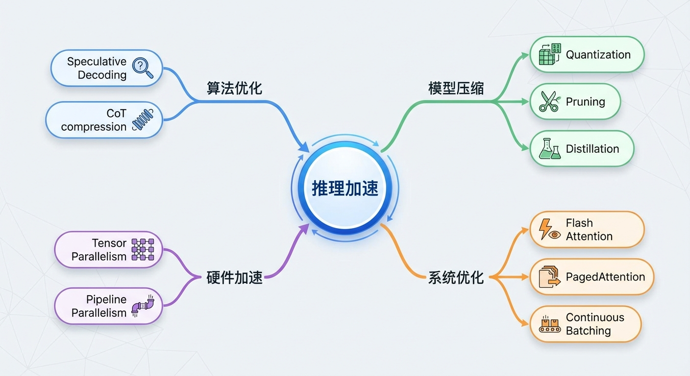
单次推理变快后，能否用更多推理计算提升效果？ → Part 3
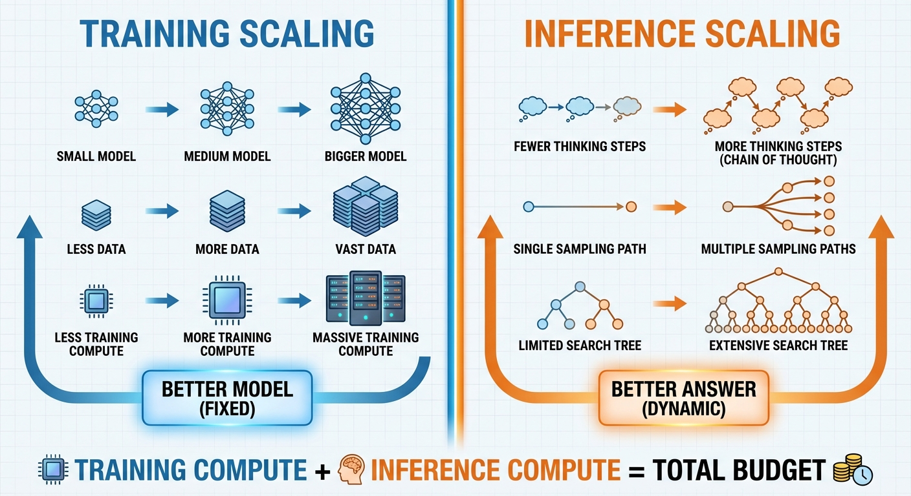
q=问题， a=答案， c=中间推理步骤 — 引入 c 把一步映射拆成多步
Q: 23 张桌子每张 4 把椅子；14 张坐 3 人、5 张坐 4 人，其余空着，共几人？
CoT 等价于增加计算深度；每步 ≈ 网络多一层 → 可表达更复杂的函数。
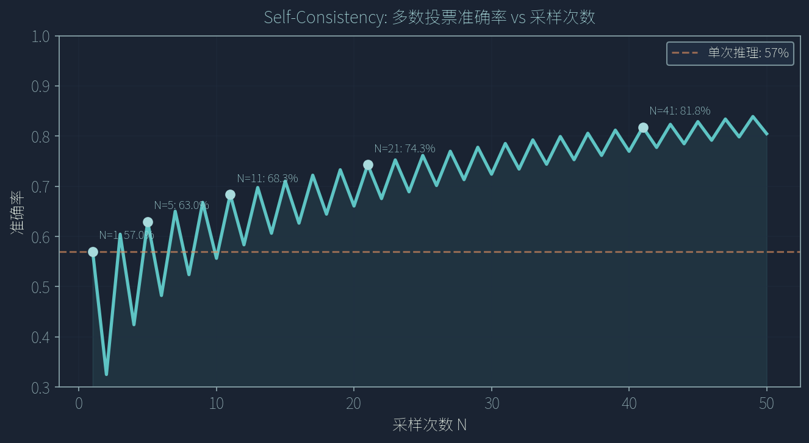
（基于二项分布模型，p=0.57，参考 Touvron et al. 2023）
| 采样次数 N | 投票准确率 | 提升 |
|---|---|---|
| 1（基线） | 57% | — |
| 5 | ~63% | +6% |
| 11 | ~68% | +11% |
| 21 | ~74% | +17% |
| 41 | ~82% | +25% |
边际收益递减，但准确率持续提升
更多采样 × 投票 = 更可靠答案。
计算量翻倍 → 准确率持续提升，但存在收益递减。
Best-of-N 流程示意：N 个候选 → Verifier 打分 → 取最高分
Best-of-N（结果验证）
期望质量随 N 单调增：
Process Reward Model（过程验证）
Best-of-N 用结果验证选优 → PRM 用过程验证引导搜索：从"投票"到"评分"的进化
核心创新：同一个 LLM 既当生成者，又当评判者——类似人类的"内心对话"。
Game of 24 成功率（GPT-4，Yao et al. 2023）
$N(s,a)$ 小 ⇒ 探索项大，鼓励冷门分支；
$Q/N$ 高 ⇒ 利用项大，深入已知好路径。
o1/o3 证明：推理时的计算扩展是提升 LLM 能力的新维度，与模型规模扩展互补。
不一定需要训练更大的模型。对于单个困难问题，
增加推理计算（更多采样、搜索）可以显著提升准确率。
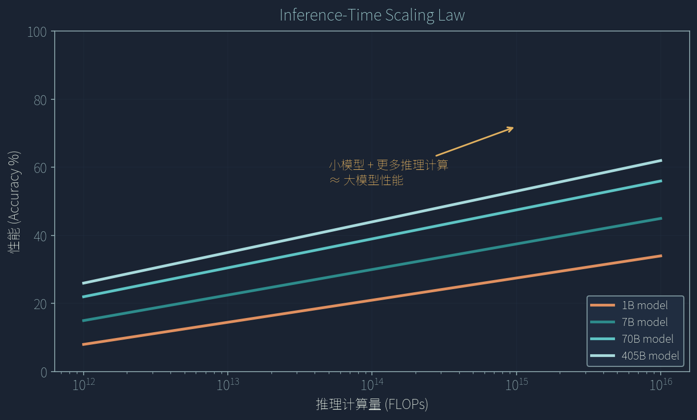
趋势参考 Snell et al., arXiv:2408.03314 (2024)；此处为定性示意图。
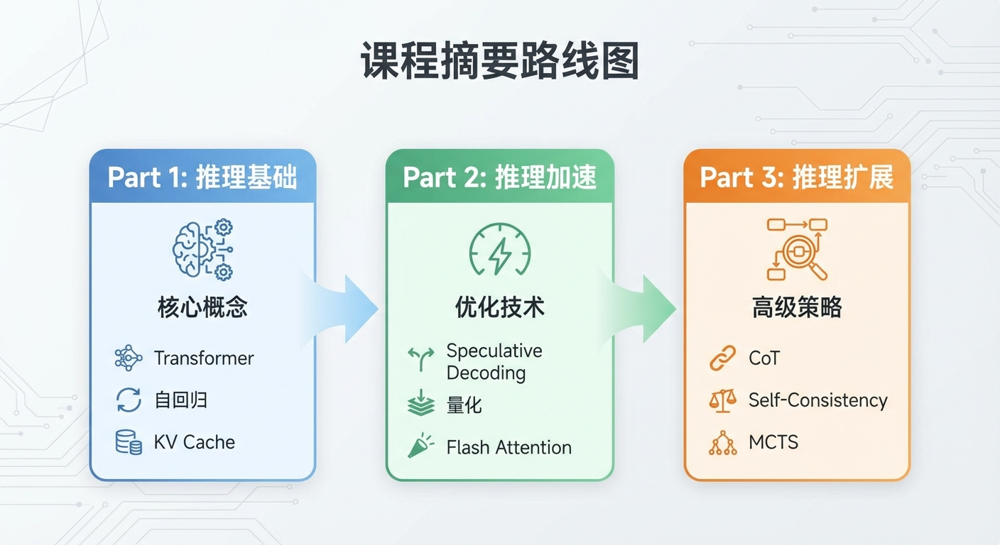
核心信息：推理不仅是工程问题 — 更多推理计算能显著提升输出质量
感谢聆听 · Q&A 欢迎提问